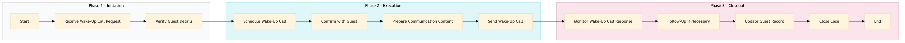

| Role | Steps |
|---|---|
| Front Desk Agent | 1.1 1.2 2.1 2.2 2.4 3.1 3.2 3.4 |
| Concierge | 2.3 3.3 |
| Step | Name | Role | System | Input | Output | KPI | Dec? | Exc? | Pain Point / Risk |
|---|---|---|---|---|---|---|---|---|---|
| 1.1 | Receive Wake-Up Call Request | Front Desk Agent | Oracle OPERA Cloud | Guest request via phone, online booking platform, or in-person | Wake-up call request logged in Oracle OPERA Cloud | Less than 3 minutes to log request | N | Y | Handling multiple requests simultaneously |
| 1.2 | Verify Guest Details | Front Desk Agent | Oracle OPERA Cloud | Guest request details | Verified guest information | Less than 1 minute to verify | N | Y | Incorrect or incomplete guest data |
| 2.1 | Schedule Wake-Up Call | Front Desk Agent | Oracle OPERA Cloud | Verified guest details and request specifics | Scheduled wake-up call in Oracle OPERA Cloud | Less than 2 minutes to schedule | N | Y | Conflicting schedules or system errors |
| 2.2 | Confirm with Guest | Front Desk Agent | Oracle OPERA Cloud | Scheduled wake-up call details | Guest confirmation of wake-up call | Less than 1 minute to confirm | N | Y | Guest unavailability or miscommunication |
| 2.3 | Prepare Communication Content | Concierge | Oracle OPERA Cloud, Marriott Bonvoy CRM | Guest preferences and request specifics | Communication content prepared | Less than 5 minutes to prepare | N | Y | Complex or last-minute requests |
| 2.4 | Send Wake-Up Call | Front Desk Agent | Oracle OPERA Cloud, Assa Abloy VingCard | Scheduled time and prepared content | Wake-up call sent to guest room | Less than 1 minute to send | N | Y | Technical issues with wake-up call system |
| 3.1 | Monitor Wake-Up Call Response | Front Desk Agent | Oracle OPERA Cloud | Guest response to wake-up call | Response logged in Oracle OPERA Cloud | Less than 2 minutes to log response | Y | N | No guest response or delayed response |
| 3.2 | Follow-Up if Necessary | Front Desk Agent, Concierge | Oracle OPERA Cloud | Logged response and request specifics | Follow-up action taken or logged | Less than 3 minutes to follow up | Y | N | Handling guest complaints or additional requests |
| 3.3 | Update Guest Record | Front Desk Agent, Concierge | Oracle OPERA Cloud, Marriott Bonvoy CRM | Final request status and any notes | Guest record updated in Oracle OPERA Cloud and CRM | Less than 2 minutes to update | N | Y | Data entry errors or system downtime |
| 3.4 | Close Case | Front Desk Agent, Concierge | Oracle OPERA Cloud | Updated guest record and request status | Case closed in Oracle OPERA Cloud | Less than 1 minute to close case | N | Y | Complex cases requiring multiple follow-ups |
This process involves initiating and managing wake-up calls and guest communications at a Marriott full-service hotel using Oracle OPERA Cloud PMS and other relevant systems.